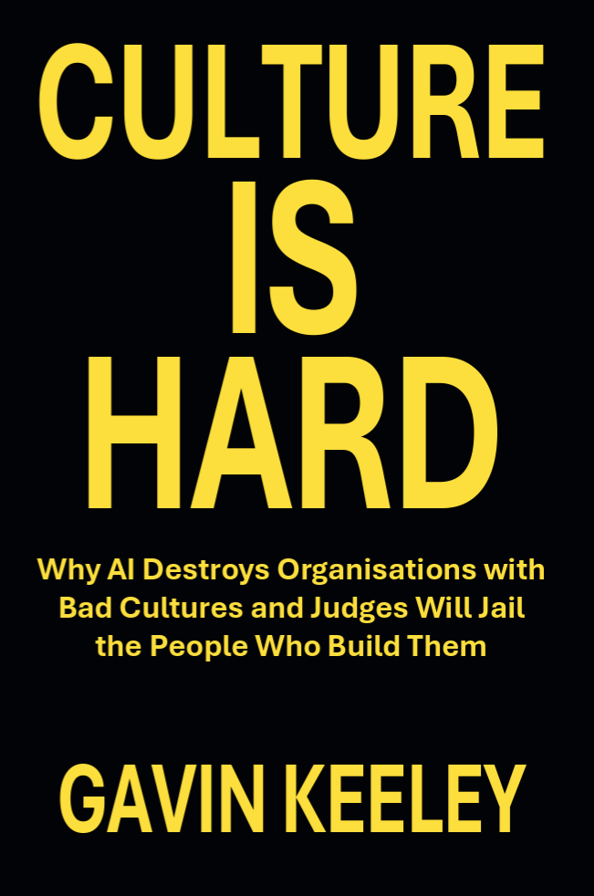

The machines are reading the rock
Artificial intelligence now executes the culture you actually have, not the one on the poster, at machine speed, while logging every decision your leadership ever made.
The companion to Lead On Purpose
"They told you culture was the soft stuff. They were wrong, and the mistake is about to get expensive."
Culture is the hardest thing in business to build, and almost everyone gets it wrong. This book explains why, and then it raises the stakes.

Eighty-four percent of chief executives privately admit their culture is not where it should be. They rank it the most valuable thing they steward, and they fail at it anyway. Not from cynicism. From difficulty. Culture is the hardest thing in business to build, and almost everyone gets it wrong.
"Culture is the residue of decisions, and residue does not lie."
This book does not just explain why culture is hard. It raises the stakes, because the ground shifted under everyone at the same time.
"AI does not corrupt a culture. It executes the one that is already there, faster than anyone can hide it."
Artificial intelligence now executes the culture you actually have, not the one on the poster, at machine speed, while logging every decision your leadership ever made.
Courts have started jailing the executives who build degrading cultures, beginning in France and spreading.
The soft era is over. The machines are reading the rock. The judges are too.
Intentional culture for an organisation that cannot fake it
Culture Is Hard is the companion to Lead On Purpose. Where the first book was about the leader, this one is about the organisation: what happens when one person's intention has to become ten thousand people's ordinary Tuesday. It names what culture actually is, why the people trained to govern it cannot see it, what it costs when it fails, and what the small honest minority do differently.
If you lead anything, and you would rather build a culture that bears load than wait for a regulator to teach you the hard way, start here.
Culture Is Hard sits alongside four books that shaped it.
The companion volume and direct predecessor. Where Culture Is Hard concerns the organisation, Lead On Purpose concerns the leader.